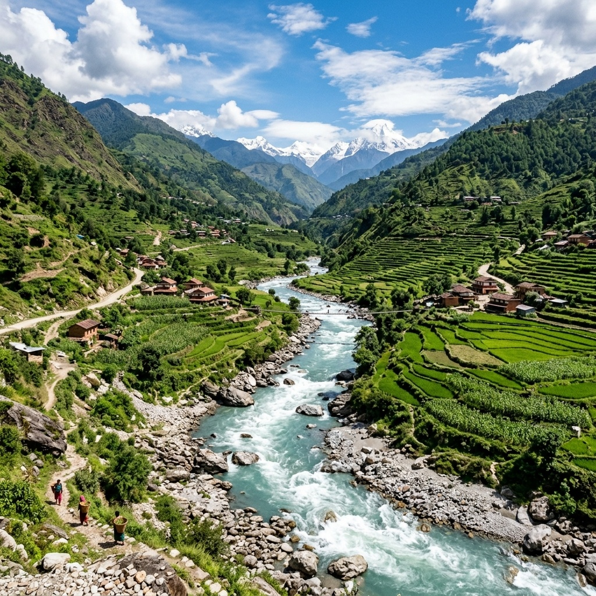
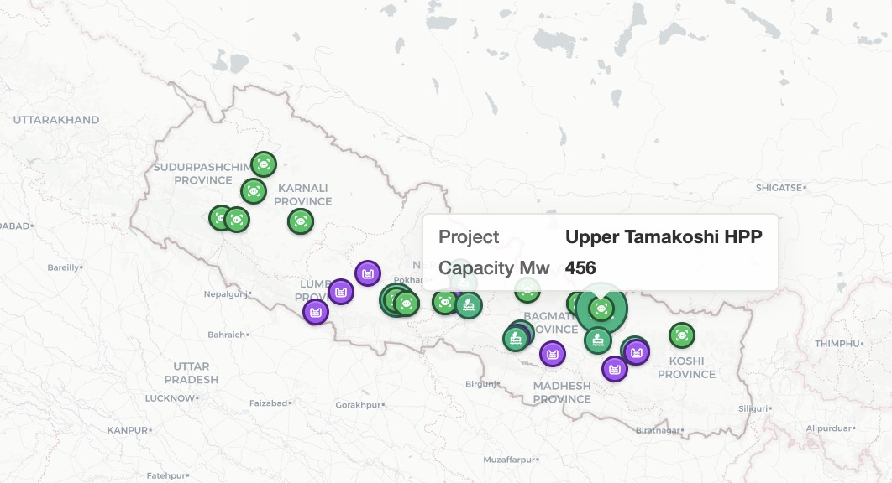

Gather sources
Reports, data tables, registries, and maps keep their provenance and limits.
Public knowledge system · Nepal energy
A wiki with data, maps, and search that makes Nepal's energy landscape navigable, from hydropower projects and transmission corridors to trade patterns and storage gaps.

The central problem
Run-of-river hydropower peaks with the monsoon. Demand does not. Nepal therefore exports wet-season surplus while importing expensive dry-season power. The project investigates that timing problem across generation, storage, transmission, trade, solar complementarity, institutions, and project finance.
Built independently from source ingestion through the public explorer.

The research starts with a physical constraint: river timing, storage, transmission, and public evidence have to be interpreted together.

Selecting Upper Tamakoshi on the live map exposes the project identity and capacity while preserving its national infrastructure context.
Spatial navigation
Page–map bindings connect national claims to the places and infrastructure they describe. A reader can move from a project or corridor to its source page, data table, related claims, and unresolved questions without losing the geographic context.
How it stays accurate
AI agents help with research and maintenance, but the wiki does not let them decide their own evidence standard.
Reports, data tables, registries, and maps keep their provenance and limits.
Sources, data points, entities, concepts, claims, and syntheses each follow different rules.
64 automated checks catch broken links, missing sources, structural drift, and search regressions.
Observed failures become new rules, prompts, validators, or unresolved questions.
Search quality
The separate v1 search holdout was frozen before one read-only search run and was not used for tuning. Its six personas are simulated and its relevance judgments are internal, not external user research. Post-run judgment gaps remain flagged rather than being edited into v1.